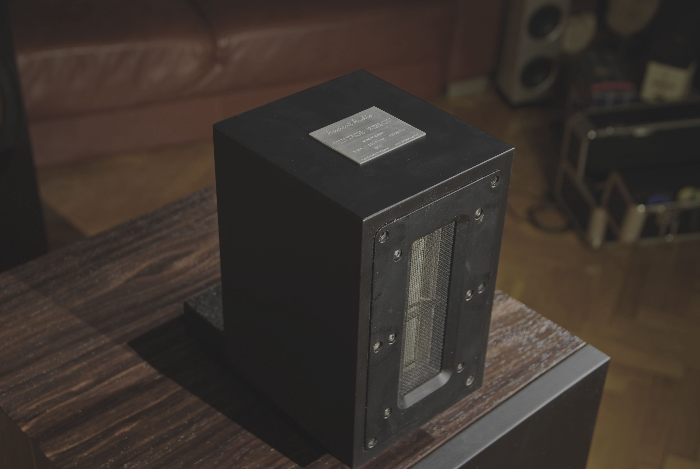
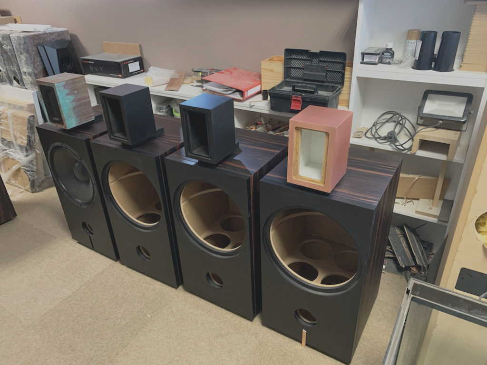

Vintage Ribbon
It was designed for low power tuve amplifers, as well as high SPL reproducing music, in medium and big rooms.
This speaker links two the best previous Ancient Audio speaker designs.
"Vintage" , gave high efficiency concept, basing on large woofer, with very strong magnet, and high B x L motor.
"Wing Speaker System " inspired to use ribbon midrange / tweeter driver.
Woofer of speaker system was made by Italian B&C , leader
of PA drivers.
15 inches ( 38 cm ) huge diaphragm , however lightweight is
classical, vinatge paper design.
However, magnet system and voice coil are modern. Strong neodymium magnet enables high efficiency, 100 dB/W/m. High temperature voice coil can handle up to 1000 W of music power, what means 130 dB - comparable do starting jet airplane.
Big area, hard suspension , high motor force made incredible impact , power, energy and control of bass. Even driving by anemic triode amplifiers, Vintage Ribbon easy makes live rock concert impression. Not only because high volume, but mostly by speed.
Vintage Ribbon can be driven by 2A3, 300 B or any other low power Single Ended Triode amplifier. These amplifiers has excellent sound, however limited power. Speaker efficiency compensates it, creating amazing sound, also with energy and volume.
Because the most informations came from very small diaphragm, so it is possible to comfortable auditionning Vintage Ribbon from small distance, enjoying also huge soundstage.
Speakers are both energetic and smooth, what is rare combination. So, driven by transistor amplifer speakers can show not only muscules of music, but feather touch too.
We strongly recommend to play Vintage Ribbon with Digital Speaker Processor, what make huge improvment of sound. It will create any aspect of music.
